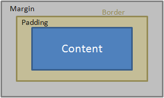

For starters, The margin property defines the space around an HTML element. It is possible to use negative values to overlap content. ... The margin-top specifies the top margin of an element. The margin-left specifies the left margin of an element. The margin-right specifies the right margin of an element.. The purpose of the HTML border attribute is to set a visible border width for a table. Supported elements.An element's padding area is the space between its content and its border. Note: Padding creates extra space within an element. In contrast, margin creates extra space around an element or space.
The CSS box model is essentially a box that wraps around every HTML element. It consists of: borders, padding, margins, and the actual content.